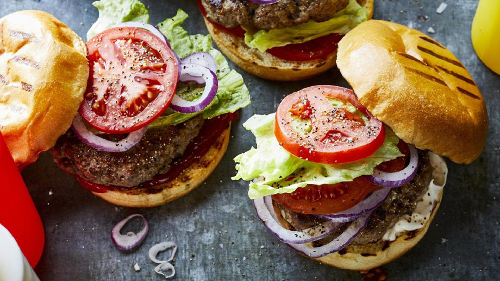

Hamburgers

Ingredients
- 1-lb medium ground beef
- 4 hamburger buns
- Sliced cheese of your choice (optional)
- Salt
- Pepper
- Choice of toppings (Lettuce, tomato, pickles, onions, ketchup, mustard, mayonaisse)
Directions
- Let ground beef come to room temperature before forming into 4 - 1/4 lb patties.
- Prepare toppings. Thin slices of pickles, tomatoes, and onions work the best. Lettuce can be whole or shredded.
- Pre-heat cast-iron skillet over medium-high heat.
- Generously season patties with salt and pepper before placing in skillet.
- Cook patties for 3-5 minutes or until browned, then flip.
- After flipping, place a slice of cheese on each patty. Pour a small amount of water into the skillet and cover with a lid. This allows the cheese to melt. Cook for another 3-5 minutes.
- Place burger on bun and top with desired toppings.